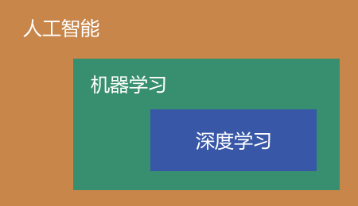
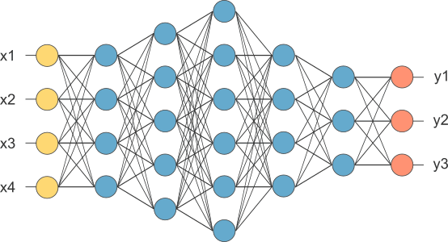

人工智能、机器学习、深度学习的区别，终于说清楚了
人工智能、机器学习和深度学习是最近几年比较火热的概念，它们看起来比较相似，但是仿佛又存在某些差异。这篇文章，咱们就来科普一下三者之间的区别和联系。
为了让读者有一个整体上的认知，咱们先来看一张图。
可以看到，三者之间是相互包含的关系：人工智能涵盖范围最广，它包含了机器学习；而机器学习是人工智能的重要研究内容，它又包含了深度学习。
人工智能是一门以计算机科学为基础，融合了数学、神经学、心理学、控制学等多个科目的交叉学科。
人工智能的目的是让计算机模拟人类的思维，从而解决一些不能用代码描述的问题，比如判断一只动物是不是小狗、通过 CT 照片检测一个人的病情等。
这些问题不能用传统的编程方法解决，因为没有一个确定的公式，或者说没有一个确定的算法。但是我们人类就很容易解决这些问题，因为人类大脑不是根据固定的算法来推导的，而是根据以往的认知或者经验来推理。
人工智能的目的也是如此，就是不给计算机编写固定的算法，而是让它自己形成一套模型，然后利用这套模型来帮助人们解决问题。这里的模型，就可以看做计算机的“经验”或者“认知”。
因为此时计算机的思维方式和人类非常相似，所以才称为人工智能。
人工智能只是一种美好的愿景，但是具体如何才能实现人工智能呢？答案就是机器学习。
计算机原本只是一张白纸，没有任何“阅历”，我们必须喂给他大量的数据，让它从数据中积累经验，逐渐形成自己的认知。这是一个让计算机不断学习的过程，所以称为机器学习。
机器学习是一件很麻烦的事情，需要先搭建一个模型，这个模型包含了很多参数，然后把准备好的数据（包括正确的结果）输入到模型中，不断调整模型的参数，直到它非常接近或者完全符合正确的结果，这个时候我们就说模型训练好了。
机器学习的模型有很多种，已经有人帮我们开发好了，也就是各种成熟的算法，包括决策树、随机森林、逻辑回归、SVM、朴素贝叶斯、随机森林、支持向量等。
实际开发中，我们根据自己的需求从中选择一个模型即可，这个不用担心。最要命的是数据，机器学习需要大量的数据才能训练好模型。人类看一两张猫的照片就认识猫了，但是机器学习需要看成千上万张照片。
如何收集大量有效的数据，是机器学习的重中之重，所以才有了爬虫，有了数据挖掘，有了数据清洗等分支。
机器学习的模型是一个不断发展的过程，后来人们逐渐研究出了一种更加智能和通用的模型，就是卷积神经网络（CNN）。CNN 模拟人类大脑神经突触之间的连接，通过调整参数来模拟突触连接的强弱，如下图所示。
CNN 包含很多层，每一层又包含多个节点。除了第一层和最后一层，中间的那些统称为隐藏层（蓝色部分）。隐藏层可以多达数百层，每一层的输入都是上一层的输出，同时每一层的输出都可以作为下一层的输入，它们交织在一起就形成了一个很深的网络，所以称为“深度学习”。
见名知意，深度学习真的很深，哈哈。
目前深度学习已经被应用在人工智能的各个领域，其中最显著的应用是计算机视觉和自然语言处理领域，我们所熟知的语音识别、机器翻译、无人驾驶、人脸识别等等，都是基于对深度学习算法的应用。
除了 CNN，深度学习还有很多其它的衍生模型（算法），比如循环神经网络（RNN）、深度置信网络（DBN）、长短期记忆模型（LSTM）、生成对抗网络（GAN）、受限玻尔兹曼机（RBM）等。
机器学习是实现人工智能的主要途径，也是人工智能的核心，它有很多模型（算法）可以选择。
深度学习是机器学习的一个重要分支，它使用了一些更加通用和智能的模型，是比较前沿的学术课题。深度学习需要更多的数据和算力作为支撑，否则难以发挥其优势。
为了让读者有一个整体上的认知，咱们先来看一张图。

可以看到，三者之间是相互包含的关系：人工智能涵盖范围最广，它包含了机器学习；而机器学习是人工智能的重要研究内容，它又包含了深度学习。
人工智能
人工智能的英文全称是 Artificial Intelligence，简称 AI。人工智能是一门以计算机科学为基础，融合了数学、神经学、心理学、控制学等多个科目的交叉学科。
人工智能的目的是让计算机模拟人类的思维，从而解决一些不能用代码描述的问题，比如判断一只动物是不是小狗、通过 CT 照片检测一个人的病情等。
这些问题不能用传统的编程方法解决，因为没有一个确定的公式，或者说没有一个确定的算法。但是我们人类就很容易解决这些问题，因为人类大脑不是根据固定的算法来推导的，而是根据以往的认知或者经验来推理。
人工智能的目的也是如此，就是不给计算机编写固定的算法，而是让它自己形成一套模型，然后利用这套模型来帮助人们解决问题。这里的模型，就可以看做计算机的“经验”或者“认知”。
因为此时计算机的思维方式和人类非常相似，所以才称为人工智能。
机器学习
机器学习的英文全称是 Machine Learning，简称 ML。人工智能只是一种美好的愿景，但是具体如何才能实现人工智能呢？答案就是机器学习。
计算机原本只是一张白纸，没有任何“阅历”，我们必须喂给他大量的数据，让它从数据中积累经验，逐渐形成自己的认知。这是一个让计算机不断学习的过程，所以称为机器学习。
机器学习是一件很麻烦的事情，需要先搭建一个模型，这个模型包含了很多参数，然后把准备好的数据（包括正确的结果）输入到模型中，不断调整模型的参数，直到它非常接近或者完全符合正确的结果，这个时候我们就说模型训练好了。
机器学习的模型有很多种，已经有人帮我们开发好了，也就是各种成熟的算法，包括决策树、随机森林、逻辑回归、SVM、朴素贝叶斯、随机森林、支持向量等。
实际开发中，我们根据自己的需求从中选择一个模型即可，这个不用担心。最要命的是数据，机器学习需要大量的数据才能训练好模型。人类看一两张猫的照片就认识猫了，但是机器学习需要看成千上万张照片。
如何收集大量有效的数据，是机器学习的重中之重，所以才有了爬虫，有了数据挖掘，有了数据清洗等分支。
注意，除了机器学习，传统的编程方式也可以实现部分人工智能，这已经在某些领域内做出了成果，比如文字识别、电脑下棋等。
深度学习
深度学习的英文全称是 Deep Learning，简称 DL。机器学习的模型是一个不断发展的过程，后来人们逐渐研究出了一种更加智能和通用的模型，就是卷积神经网络（CNN）。CNN 模拟人类大脑神经突触之间的连接，通过调整参数来模拟突触连接的强弱，如下图所示。

图：卷积神经网络示意图（x 表示输入，y 表示输出）
图：卷积神经网络示意图（x 表示输入，y 表示输出）
CNN 包含很多层，每一层又包含多个节点。除了第一层和最后一层，中间的那些统称为隐藏层（蓝色部分）。隐藏层可以多达数百层，每一层的输入都是上一层的输出，同时每一层的输出都可以作为下一层的输入，它们交织在一起就形成了一个很深的网络，所以称为“深度学习”。
见名知意，深度学习真的很深，哈哈。
通常来说，机器学习模型的复杂度越高，它的学习能力就越强，这就好比说，使用更多的变量，你就能表达出更复杂的公式。但是一味增加网络深度是不好的，因为太深的网络不好训练。
深度学习是机器学习的一个重要分支，它是机器学习的高级玩法，更加接近真正的人工智能。目前深度学习已经被应用在人工智能的各个领域，其中最显著的应用是计算机视觉和自然语言处理领域，我们所熟知的语音识别、机器翻译、无人驾驶、人脸识别等等，都是基于对深度学习算法的应用。
除了 CNN，深度学习还有很多其它的衍生模型（算法），比如循环神经网络（RNN）、深度置信网络（DBN）、长短期记忆模型（LSTM）、生成对抗网络（GAN）、受限玻尔兹曼机（RBM）等。
总结
人工智能是一种美好的目标，它希望用计算机来模拟人类的思维方式。机器学习是实现人工智能的主要途径，也是人工智能的核心，它有很多模型（算法）可以选择。
深度学习是机器学习的一个重要分支，它使用了一些更加通用和智能的模型，是比较前沿的学术课题。深度学习需要更多的数据和算力作为支撑，否则难以发挥其优势。
关注公众号「站长严长生」，在手机上阅读所有教程，随时随地都能学习。内含一款搜索神器，免费下载全网书籍和视频。

微信扫码关注公众号